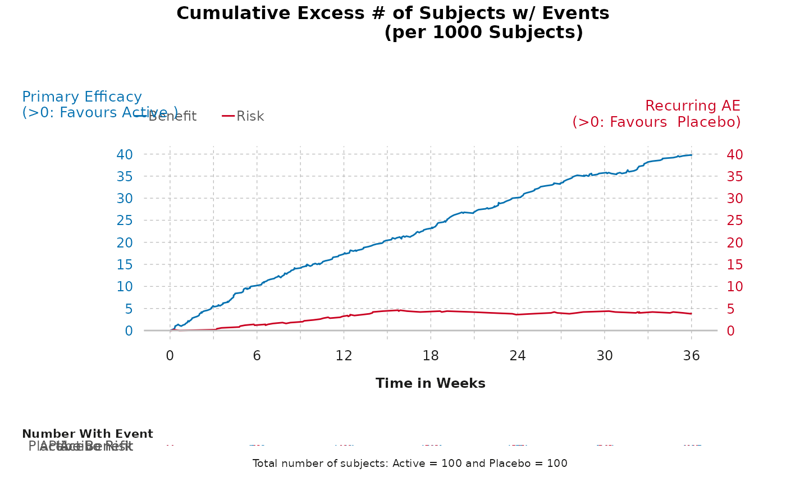

gensurv_combined.RdCombine the cumulative excess plot and corresponding table into one figure
gensurv_combined(
df_plot,
df_table,
subjects_pt,
visits_pt,
fig_colors_pt = c("#0571b0", "#ca0020"),
titlename_p =
"Cumulative Excess # of Subjects w/ Events\n (per 1000 Subjects)",
rel_heights_table = c(1, 0.2),
ben_name_p = "Primary Efficacy",
risk_name_p = "Recurring AE",
legend_position_p = c(-0.03, 1.15)
)A dataframe with 6 variables named the following:
eventtime: A vector of time points at which an event occurred.
diff: A vector containing the difference in active and control effects.
obsv_duration: A variable that specifies the duration of the observational period (numerical).
obsv_unit: A variable that specifies the unit for the duration of the observational period (this is a non-numerical input).
outcome: A vector containing whether the outcome is a "Benefit" or "Risk".
eff_diff_lbl: A vector containing the label for effect difference.
A dataframe with 5 variables named the following:
obsv_duration: A variable that specifies the duration of the observational period (numerical).
n: A vector containing a number of subjects who experienced an event at a given time (numerical).
effect: specifies between an active or control effect.
outcome: specifies whether the an outcome should be classified as a "Benefit" or "Risk" (this must have either "Benefit" or "Risk" as values).
eff_code: 0 for control and 1 for active effect.
A numerical input that specifies the baseline proportion of subjects in the study.
A numerical input that is the length between observational periods.
Allows user to change the colors of the figure (defaults are provided). Must be vector of length 2, with color corresponding to benefit first and risk second.
Allows user to change the documentation of title (default is provided)
Elements for fig vs table size.
Allows user to specify benefit of interest (default is provided).
Allows user to specify risk of interest (default is provided).
Allows user to specify legend position. Must be a vector of length 2, with the first value corresponding to the position of the legend relative to the x-axis, and the second corresponding to the position of the legend relative to the y-axis (numeric).
A combined cumulative excess plot and table.
gensurv_combined(
df_plot = cumexcess, subjects_pt = 100, visits_pt = 6,
df_table = cumexcess, fig_colors_pt = colfun()$fig13_colors
)
